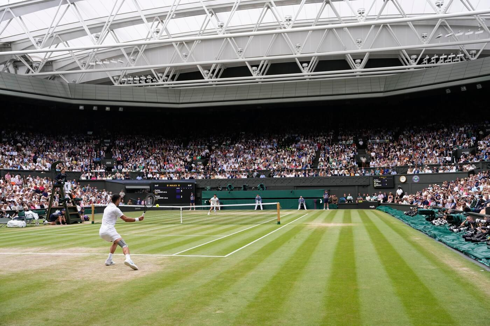

What is Tennis?
Tennis is a racket sport played between two players (singles) or two teams of two players (doubles). Players use rackets to hit a ball over a net and into their opponent's court. The objective is to hit the ball in a way that prevents the opponent from making a legal return.
Tennis is played on several different surfaces, including grass, clay, and hard courts. Each surface affects the speed and bounce of the ball, making different playing strategies more effective. Tennis combines physical endurance, coordination, speed, and strategy, making it popular as both a recreational activity and a competitive sport.
Scoring
Tennis uses a unique scoring system in which points are counted as love, 15, 30, and 40. A player must win at least four points, with a margin of two points, to win a standard game.
When both players reach 40 points, the score is called deuce. A player must then win two consecutive points to win the game. Winning the first point after deuce gives a player the advantage. If the opponent wins the next point, the score returns to deuce.
Players must win enough games to win a set and enough sets to win the match. A standard set is usually won by the first player to reach six games with a lead of at least two games. If the score reaches six games each, a tiebreak is typically played.
| Points Won | Tennis Score | Description |
|---|---|---|
| 0 | Love | No points scored |
| 1 | 15 | First point won |
| 2 | 30 | Second point won |
| 3 | 40 | Third point won |
| 3 each | Deuce | Both players have 40 points |
| Point after deuce | Advantage | Player is one point away from winning |
| Point after advantage | Game | Player wins the game |
If the player with advantage loses the next point, the score returns to deuce.
Famous Names
this will be significant figures seen in tennis like serena williams and whoever else
Serena Williams

Serena Williams is one of the most accomplished players in tennis history. She has won 23 Grand Slam singles titles, the most by any woman in the Open Era. Known for her powerful serve and aggressive playing style, Williams helped transform women's tennis and inspired generations of athletes.
Roger Federer

Roger Federer is a former professional tennis player known for his elegant playing style, precise shot placement, and versatility. He won 20 Grand Slam singles titles, including a record eight Wimbledon men's singles championships.
Rafael Nadal

Rafael Nadal is a Spanish former professional tennis player widely recognized for his dominance on clay courts. He won 22 Grand Slam singles titles, including a record 14 French Open championships. His powerful topspin, athleticism, and determination made him one of tennis's most successful competitors.
Novak Djokovic

Novak Djokovic is a Serbian professional tennis player known for his exceptional defensive skills, flexibility, and consistent baseline play. He has won 24 Grand Slam singles titles, the men's all-time record, and has achieved success on grass, clay, and hard courts.
Competitions
The four Grand Slam tournaments are the most prestigious annual competitions in professional tennis. They consist of the Australian Open, French Open (Roland-Garros), Wimbledon, and US Open. Each tournament attracts many of the world's top players and features singles, doubles, and other competitions.
The Grand Slam tournaments are held in different countries and on different court surfaces. The Australian Open and US Open are played on hard courts, the French Open is played on clay, and Wimbledon is played on grass. Winning all four major singles titles during a player's career is known as achieving a Career Grand Slam.
Australian Open

The Australian Open is held annually in Melbourne, Australia, and is the first Grand Slam tournament of the year, typically taking place in January. Played on hard courts, the tournament is known for its high temperatures, energetic crowds, and exciting matches. The Australian Open was first held in 1905 and has grown into one of the largest sporting events in the Southern Hemisphere.
French Open (Roland-Garros)

The French Open, also known as Roland-Garros, is held annually in Paris, France, usually from late May to early June. It is the only Grand Slam tournament played on clay courts, which generally produce slower ball speeds and higher bounces. The surface encourages longer rallies and requires players to have strong endurance and strategic shot placement. Rafael Nadal holds the record for the most men's singles titles at the tournament, with 14 victories.
Wimbledon

Wimbledon is the oldest tennis tournament in the world, first held in 1877. It takes place annually in London, England, usually in late June and early July. Wimbledon is the only Grand Slam tournament played on grass courts, which are traditionally associated with faster gameplay and lower ball bounces. The tournament is also famous for its traditions, including the requirement that competitors wear predominantly white clothing and the serving of strawberries and cream to spectators.
US Open

The US Open is held annually in New York City, usually from late August through early September, and is the final Grand Slam tournament of the year. Played on hard courts at the USTA Billie Jean King National Tennis Center, the tournament is known for its lively atmosphere and popular night matches. First held in 1881, the US Open has become one of the most widely recognized tennis competitions in the world.